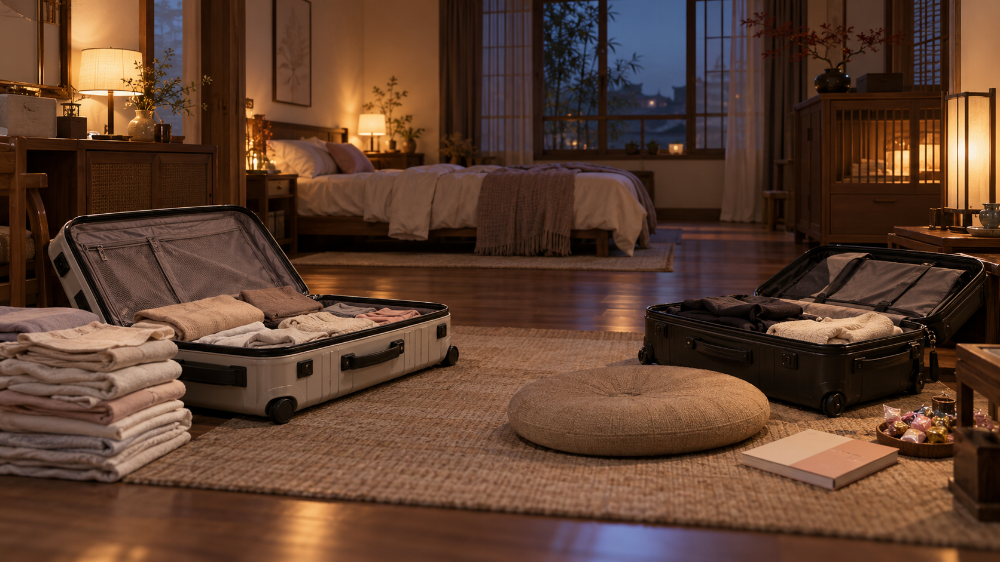
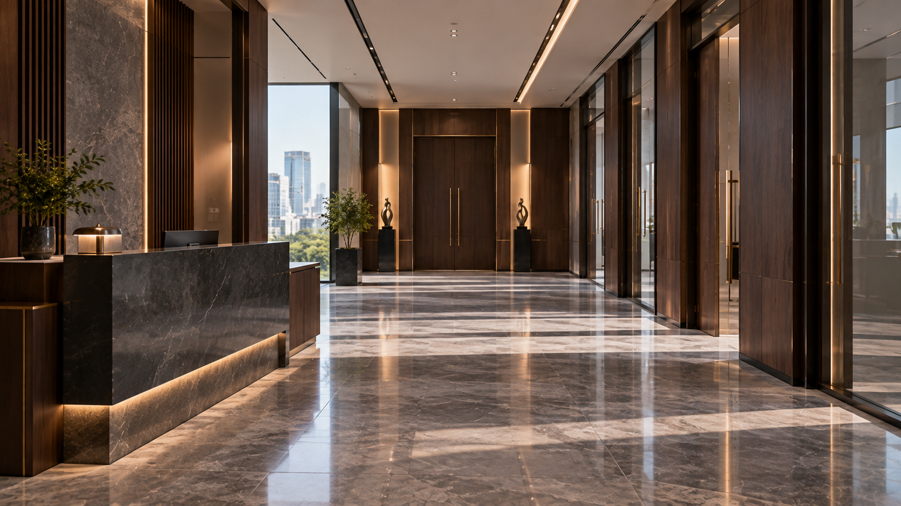
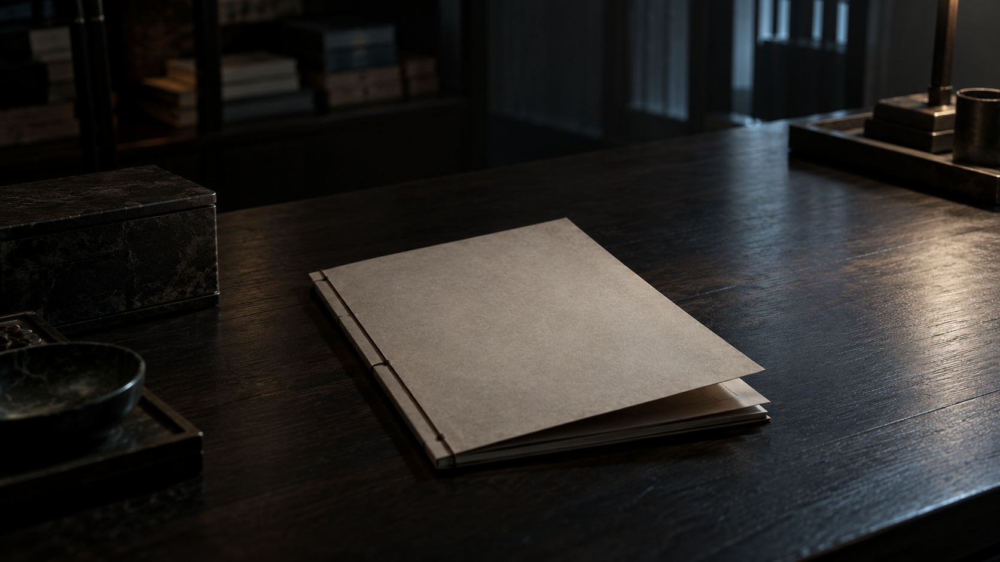
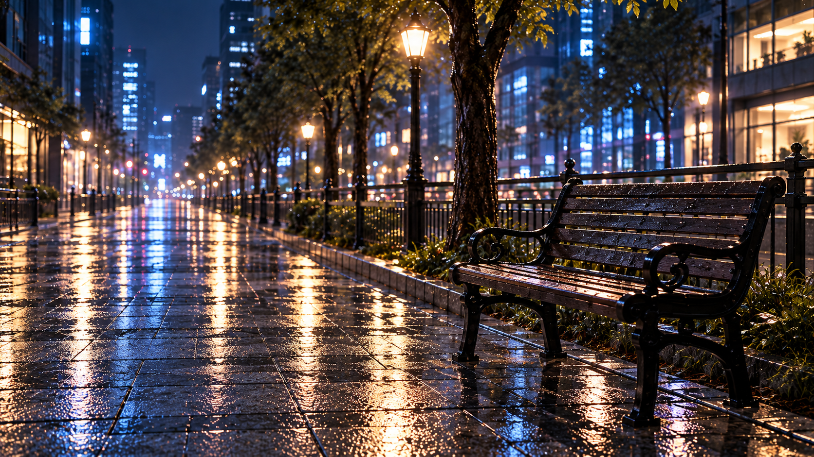
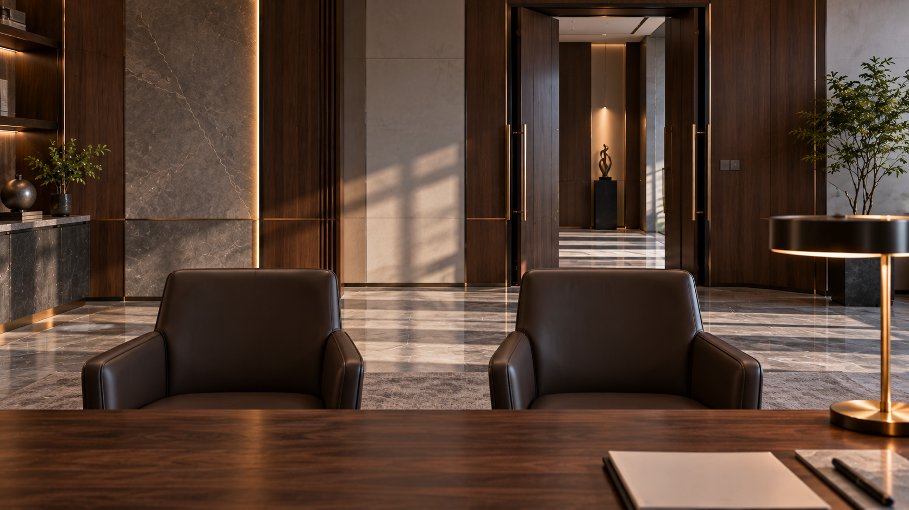

无常出差记 · EP01 v0.4 场景资产
8张无人环境底图 · 4张复用、4张新生成 · 待审核
此包是环境素材，尚不是86镜完整出图。后续角色以用户上传的原始定妆图为准。
 EP01-V04-ENV-01 · 首尔雨后街头·全景
EP01-V04-ENV-01 · 首尔雨后街头·全景第一场开场、姐妹自我介绍、招魂铃与街角出场；全景建立空间。
复用已核对的现有环境样图 · 1672 × 941 · 保存PNG原图

EP01-V04-ENV-02 · 中国地府姐妹住处·全景第二场倒叙整理行李；白辞在左侧叠衣服，黑棠在右侧坐垫旁抱书和放糖。
复用已核对的现有环境样图 · 1672 × 941 · 保存PNG原图
 EP01-V04-ENV-03 · 中韩阴间边境·全景
EP01-V04-ENV-03 · 中韩阴间边境·全景第三场通关与迎接；姐妹从左侧入画，崔赫在右侧迎接。
复用已核对的现有环境样图 · 1672 × 941 · 保存PNG原图
 EP01-V04-ENV-04 · 严在玄办公室·主机位
EP01-V04-ENV-04 · 严在玄办公室·主机位第四场进入办公室及严在玄桌后主机位；人物站位按分镜安排。
复用已核对的现有环境样图 · 1672 × 941 · 保存PNG原图

EP01-V04-ENV-05 · 韩国地府行政大厅·入口机位第四场崔赫带姐妹经过行政大厅，到办公室门口；与办公室延续材质和日光。
本次新生成 · 1672 × 941 · 保存PNG原图

EP01-V04-ENV-06 · 尾声昏暗档案房间·桌面底图第四场尾声匿名合档案前的无人底图；只加原文指定的手部动作，不补身份线索，姓名后期叠字。
本次新生成 · 1672 × 941 · 保存PNG原图

EP01-V04-ENV-07 · 首尔街头长椅·收魂对话机位第一场黑棠与大叔收魂对话的较近机位；用于长椅正反应镜头。
本次新生成 · 1672 × 941 · 保存PNG原图

EP01-V04-ENV-08 · 严在玄办公室·对话反打机位第四场从严在玄桌后看向姐妹的对话机位；人物近景可进一步按该环境图生成。
本次新生成 · 1672 × 941 · 保存PNG原图